A noise machine that will not tell you what its knobs do.
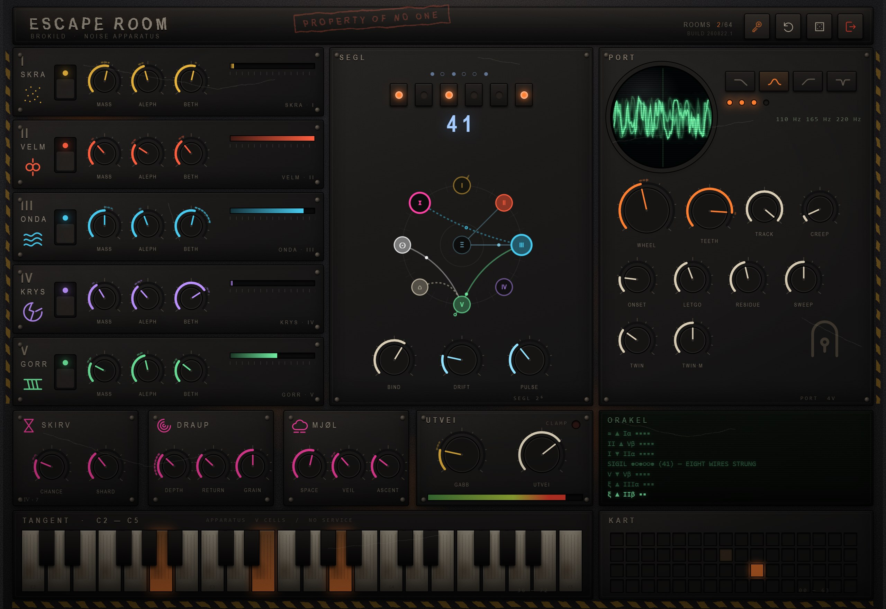
User Manual
Quick start · Reference · Try this
Version 1.0
August 2026 · Windows VST3 · build 260822.2
01
What this instrument is
Introduction
Escape Room is a noise machine built as a puzzle. Five sound cells, a
playable resonant door, three traps, and a six-bit lock that decides — invisibly, but
never randomly — what everything in the room does to everything else.
Most synthesisers are laid out so you can predict them. This one is laid out so you
have to learn it. The knobs are marked MASS,
ALEPH and BETH; the cells are called
SKRA, VELM, ONDA, KRYS and GORR; and none of that tells you anything on the first day.
What makes it worth the trouble is the SIGIL. It is a number from 0 to 63,
shown as six lamps on the lock. Each sigil seeds eight wires: each wire listens to
something in the room and moves something else. Sigil 41 always builds the same eight
wires — on your machine, on mine, tomorrow, next year. So the machine is baffling, but
it is not random, and anything you stumble into can be found again.
The five things to know before you touch anything
It makes sound on its own
Load it and it is already running. MIDI notes
are not required — they tune the resonant filter rather than start the sound.
BIND is the master mystery knob
At zero, the wires do nothing and every
control does exactly what it says. Turn it up and the room starts moving itself.
The lock is repeatable
Sixty-four rooms, each one fixed. The
KART in the bottom right remembers which ones you have visited.
There is a limiter
Permanently, after everything. There are three feedback
paths in here and they can all be opened at once.
There is a legend
Hidden. Section 09 tells you where — but you may prefer
to find it yourself.
Escape hatch. The red ⎋ button at the top
right empties every feedback store in the room instantly. Nothing is lost except the
ringing. Use it freely.
What is in the box
Escape Room.vst3 — 64-bit Windows VST3 instrument, MIDI in, stereo out.
Escape Room.exe — the same instrument as a standalone application, if you
want to play with it without opening a DAW.
This manual.
02
Quick start
Ten minutes
Do these six things in order and you will have heard everything the
machine can do, without needing to know what anything is called.
Load it and listen. Put Escape Room on a MIDI instrument track. It starts
making sound immediately — a wash with clicks in it. Nothing needs playing.
Play some notes. Use your keyboard, your MIDI controller, or the scratched
key strip at the bottom of the panel. The noise snaps into pitch: you are playing a
resonant filter, four voices of it, so chords work.
Turn BIND all the way down. Bottom of the middle panel, left knob. The room
goes still. This is the honest state: every knob now does one thing and only that
thing. Move a few and hear what they are.
Turn BIND back up to about two-thirds. The room starts modulating itself
along the eight wires drawn in the diagram above the knob. Watch the sparks: they run
from source to destination, and the dotted arcs outside the knobs show you exactly
where the room has pushed each one.
Change the sigil. Click any of the six lamps on the lock, or drag the big
number, or click a square in the KART. The eight wires are
rebuilt instantly and the machine becomes a different animal. Sixty-four of them.
Press the dice. Third button, top right. It shuffles the whole room. Press
the arrow next to it to put it back. This is the fastest way to find something you
would never have dialled up on purpose.
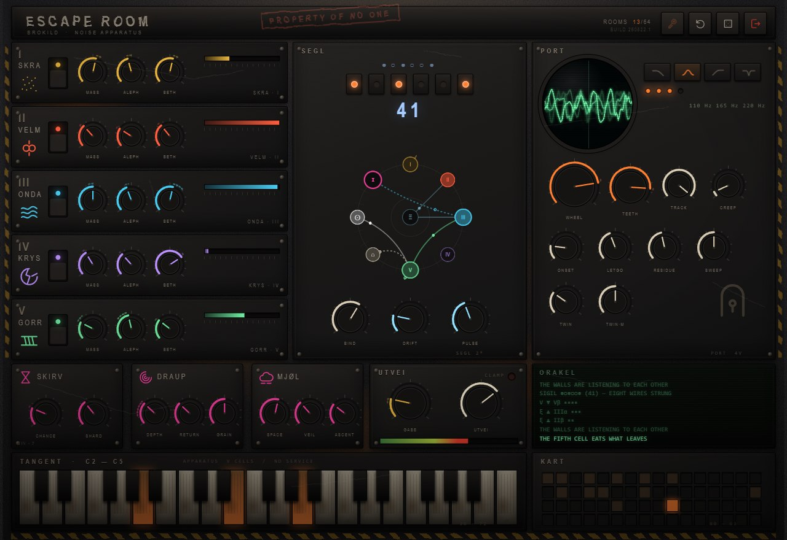
The whole room. Five cells down the left, the lock in the middle, the door
on the right; traps, output, oracle along the bottom; keys and the map of sixty-four
sigils underneath.
03
The room at a glance
Layout
Left column — five cells
The sound sources. Each is a different species
of noise; none of them is an ordinary oscillator. Each has a rocker (open / sealed),
a MASS level and two unmarked knobs,
ALEPH and BETH.
SEGL — the lock
Six bit-lamps, the sigil number,
the wiring diagram, and the three knobs that decide how hard the room moves itself:
BIND, DRIFT, PULSE.
PORT — the door
The playable four-voice resonant
filter, the peephole oscilloscope, and the filter shape.
SKIRV · DRAUP · MJØL
The three traps: a slice
repeater, a delay, a reverb.
UTVEI
Saturation, output level, master meter, and
the CLAMP lamp that lights when the limiter is holding the door shut.
ORAKEL
The terminal. It reports the wiring, and
it tells you the real value of any knob while you are dragging it.
TANGENT
Three octaves of keys, C2 to C5. Playable
with the mouse and lit by incoming MIDI.
KART
Sixty-four squares, one per sigil. Dim means
never visited, warm means visited, bright means you are in it. Click to travel.
Reading a knob
A knob shows its own position as a solid arc. When the loom is pushing it, a
dotted ghost arc appears just outside, spanning from where you set it to where the
room has actually put it. That is the single most useful thing on the panel: it is how you
see modulation rather than guess at it.
Drag a knob and the ORAKEL prints its real value in real units —
hertz, milliseconds, per cent. Hold Shift while dragging for fine control,
double-click to reset to default, and the scroll wheel nudges.
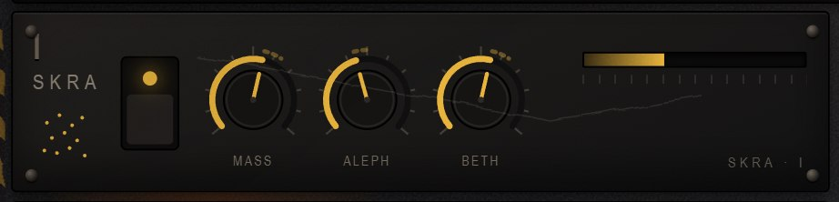
One cell: roman numeral and glyph, the rocker with its lamp, MASS / ALEPH /
BETH, and an activity meter. A sealed cell dims and its meter falls to nothing.
04
The five cells
Sources
All five cells. Sealed cells dim and their meters fall away — cell II and
cell V are sealed by default.
Each cell makes noise a different way. ALEPH and BETH mean something
different in every one of them — that is deliberate, and it is the main thing there is to
learn about the machine.
I · SKRA — the geiger cloud
Random impulses. Each one is a short pitched click with a random polarity, a random
pan and a randomised pitch around the setting.
ALEPH
How often it ticks, from a third of a click a second to 2600 a
second. Low is a crackle; high is a hiss with grain in it.
BETH
The size and pitch of each tick, from 0.5 ms at 7.5 kHz down to
160 ms at 110 Hz. Low is dust; high is a bag of dropped marbles.
The hidden coupling. SKRA also strikes the strings in
KRYS — whether or not SKRA itself is switched on. If cell IV is
ringing and you cannot find out why, this is why.
II · VELM — the cross-modulated pair
Two sine oscillators, each modulating the other's frequency. Below about 60 % this is
a metallic FM tone. Above it, the pair stops being periodic and starts screaming.
ALEPH
Pitch and ratio at the same time — 17 Hz to 2.8 kHz, with the
second oscillator's ratio widening as you go up. One knob, two jobs.
BETH
The modulation depth. This is the knob that decides whether the
cell is an instrument or an emergency.
III · ONDA — the wandering formants
Pink noise through three resonant band-passes at an inharmonic spacing, whose centres
take a random walk. The most "musical" cell, and the one to leave on while learning
the door.
ALEPH
Where the three bands sit, 65 Hz to 6 kHz.
BETH
Two things at once: how tight the bands are (Q 2 to 46) and how
fast they roam (0.05 to 9 Hz). Low is a slow wide wash; high is a chattering swarm.
IV · KRYS — the string bank
Five delay lines tuned to an inharmonic series — bell-like rather than harmonic —
struck by an internal spark and by SKRA.
ALEPH
Tuning, 42 Hz to 1.7 kHz for the lowest string.
BETH
Decay and brightness together, from a short damped tick to a ring
that lasts most of a minute. High settings also strike less often, because they do not
need to.
V · GORR — the maw
The strange one. GORR does not generate anything; it eats the room's own output —
everything, after the door — and destroys it: sample-rate crusher, then bit crusher, then
a wavefolder. What comes out goes back into the room. This is the feedback loop, and it
is the reason the machine can surprise you.
ALEPH
Destruction. Sample rate divided by up to 111, bit depth from 15
down to just over 1.
BETH
Fold amount, and how much of the room GORR is fed. Turning
this up tightens the feedback loop; at the top the room is howling at itself.
If it is stuck howling — press ⎋, or pull
GORR's BETH down, or seal the cell. The limiter will keep it from being dangerous, but it
will not make it stop.
05
PORT — the door
The playable part
Everything the cells make passes through the door. It is a state-variable
filter that can be driven to a very high Q, it has four independently played voices, and
it is where noise becomes music.
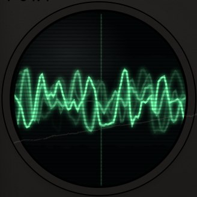
The peephole: an oscilloscope of the output, drawn on tired
phosphor.
Playing it
A MIDI note does not start a sound — the room is already making sound. A note opens a
filter voice tuned to that note, with its own envelope. Four notes can be held; a fifth
steals the oldest voice.
WHEEL
Cutoff, 25 Hz to 16 kHz. With TRACK at 100 % the played
notes own the pitch and this only sets the untriggered drone; below 100 % it blends
back in.
TEETH
Resonance, Q 0.55 to 58. Above about 90 % the filter sings on its
own and the cells become an excitation rather than a sound.
SHAPE
Low, band, high or notch. Band is the default and the most
musical for noise; notch is the one to reach for when you want a hole rather than a
note.
TRACK
Key follow. At 100 % a played note is exactly in tune. At 0 % the
notes still open the envelope but the pitch stays where WHEEL puts it. Halfway is a
squelch that only half agrees with you.
CREEP
Portamento between notes, up to 1.6 seconds.
ONSET / LETGO
Attack and release of the voice envelope: 0.8 ms to 4 s,
and 4 ms to 8 s.
RESIDUE
The level of the untriggered drone — a fifth filter that is
always open at WHEEL's frequency. At zero the instrument is silent until you play it;
at maximum it drones under everything.
SWEEP
Envelope to cutoff. Below 50 % the envelope sweeps down, above it
sweeps up, by as much as three octaves at the extremes.
TWIN
A second resonance, 0 to 24 semitones above the first. At zero it
is shut. A fifth or an octave turns single notes into intervals.
TWIN·M
How much of the twin is mixed in.
To make it sound tuned: TRACK 100 %, TEETH above 75 %, SHAPE on
band, and one broadband cell open — ONDA is the easiest. Then play. To make it sound like
a machine that has been left running for forty years, do the same with RESIDUE up and BIND
at two-thirds.
TANGENT: three octaves, C2 to C5. Keys light for mouse clicks and for
incoming MIDI alike.
The four lamps
The row of small lamps under the shape buttons is the four voices. They light with the
envelope, and the frequencies of everything currently sounding are printed to their right
in hertz. Keys on the strip below light for both mouse and MIDI notes.
06
SEGL — the lock and the loom
The big idea
This is the part of the instrument that is actually unusual. Everything
else is a good noise machine; the lock is what makes it a room you can get lost in.
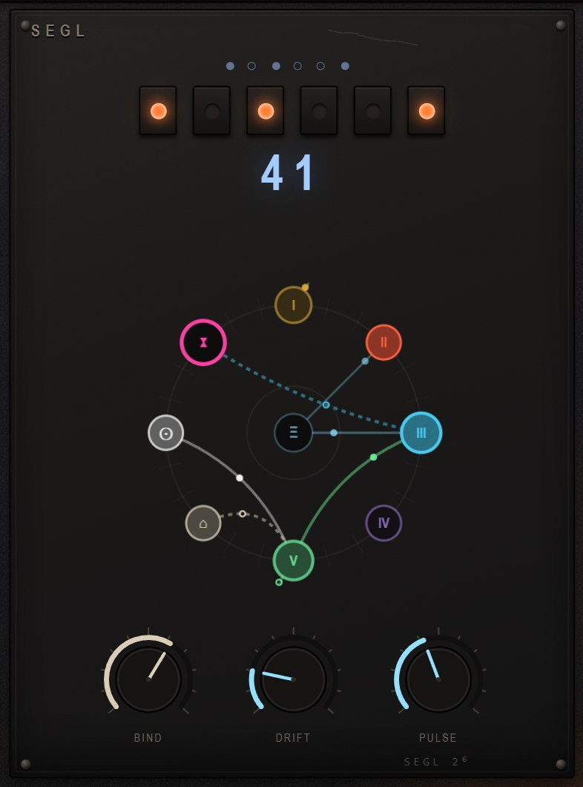
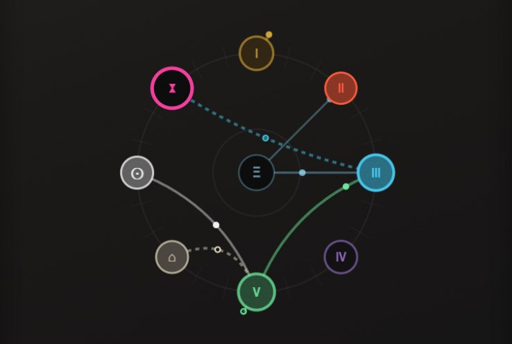
Nine nodes: five cells, the door, the traps, the exit, and the chaos core
in the middle. Arcs are wires; sparks run the way the signal runs.
How a sigil becomes a machine
The sigil is six bits — sixty-four values. That number seeds a small deterministic
generator which strings eight wires. Each wire has:
a source: one of twelve things it can listen to,
a destination: one of twenty-one knobs it can move,
a depth and a sign — it either raises or lowers,
a curve: straight, squared, or stepped, which is why two wires with the same
source and destination still do not feel alike.
The first four wires always land on a cell parameter, so no sigil is completely inert.
The other four can go anywhere — the door's cutoff and resonance, the traps, the output
drive, or a cell's level.
What a wire can listen to
I – V
The loudness of each cell. A sealed cell contributes nothing, so
the rocker switches are also modulation switches.
ξ ψ ζ
The three axes of a Rössler attractor — a chaotic oscillator that
never repeats and never runs away. PULSE sets its speed.
⌂
The door's envelope: how hard you are playing.
∿ ≈
Two slow drunken walks.
⊙
The output level, which closes the biggest loop of all.
The three knobs
BIND
How hard every wire pulls. At zero the room is inert and
every knob does exactly what it says. This is the setting to learn on.
DRIFT
A slow random walk added to every destination, wired or not. Even
a completely unwired room will not sit still with this up.
PULSE
The speed of the chaos core and of the drift, 0.03 Hz to 5 Hz.
Reading the diagram
A solid arc with a filled spark pushes its destination up. A dashed arc
with a hollow spark pulls it down. The colour of the arc tells you which node it comes
from. A node swells while it is being moved, and glows while it is making sound. Wires
whose source and destination are the same node loop back on themselves — those are the
self-feeding ones, and they are usually the most interesting.
The map remembers. Every sigil you visit lights a square in the
KART and the counter at the top counts them. It is kept between
sessions. Sixty-four is the whole instrument.
07
The three traps
Effects
Three effects, in this order, after the door. Each one has fewer knobs
than it needs — the knobs it has do more than one thing.
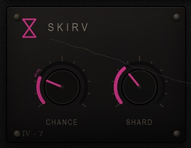
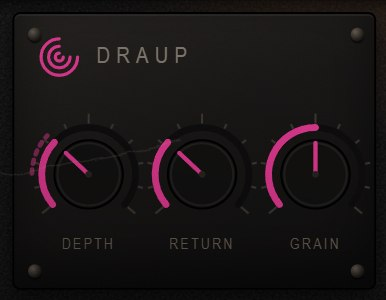
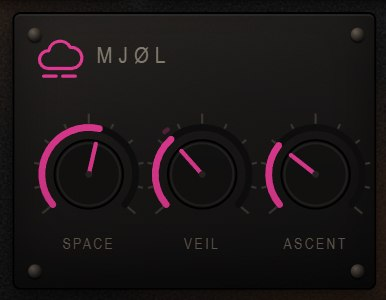
SKIRV — the slice repeater
CHANCE
Both the odds that any given slice gets caught and repeated,
and how much of the repeat you hear. At zero it is off; at maximum the
original is almost entirely replaced.
SHARD
The slice length, 18 ms to 450 ms. Short is a granular buzz; long
is a bar-length stutter.
A caught slice plays forward, backward, at double speed or at half speed,
chosen at random. You do not get to pick.
DRAUP — the delay
DEPTH
Delay time, 7 ms to 1.9 s, with a slow tape warble on the tap and
a cross-fed ping-pong between the channels.
RETURN
Feedback and wet level in one knob. Below about half it
is a delay; above it, the loop starts to sustain; at the top it is a resonator.
GRAIN
Tilts the tone inside the loop — dark and thick at the bottom,
thin and papery at the top.
MJØL — the reverb
SPACE
Size and tail together, 0.35 s to 16 s, getting darker as it gets
bigger.
VEIL
Dry / wet mix.
ASCENT
Feeds an octave-up shimmer back into the reverb. A little is a
halo; a lot climbs forever.
UTVEI — the way out
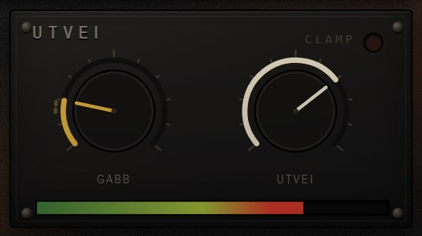
GABB
Saturation before the output, level-compensated so it thickens
rather than simply gets louder.
UTVEI
Output level.
CLAMP
Not a control. The lamp lights when the limiter is holding the
output down. Some of the best settings in this instrument live with it lit.
08
The oracle, the map and the keyhole
Finding your way
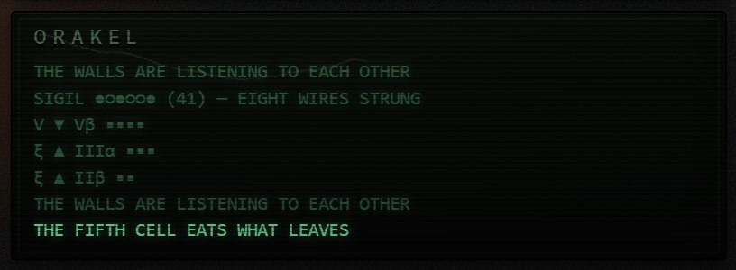
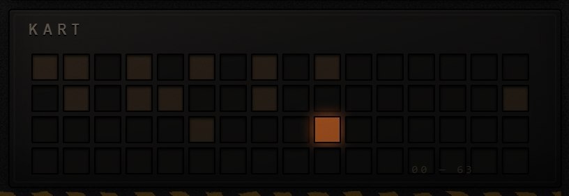
ORAKEL
The terminal is the only place in the instrument that speaks plainly, and it only does
it when asked. It prints:
the real value of any knob while you are dragging it, in real units — this is
how you find out what a knob actually is;
the sigil and the first three of its eight wires, whenever the lock changes;
the state of a cell rocker or the door shape when you change it;
occasional remarks. Some of them are hints.
KART
Sixty-four squares, one per sigil, laid out 16 across. Dark means you have never been
there, warm means you have, and the bright one is where you are. Click any square to
travel there. The counter at the top of the panel reads ROOMS n/64.
The keyhole
There is a legend — a full plain-English decoding of every mark on the panel, plus this
room's eight wires written out in words. It is not on a menu.
Tap the keyhole three times. There is one at the foot of the door, and
the small glowing one at the top right of the panel does the same thing. Once found it
stays found, and either keyhole opens it from then on.
The legend, once found. The block at the bottom is generated from the sigil
you are actually in — it changes as you travel.
09
How to learn a room
Method
Sixty-four rooms is a lot to hold in your head. This is the routine that
works.
Go inert. BIND to zero, DRIFT to zero. Now the room is just five noise
sources, a filter and three effects, and everything is honest.
Seal everything but one cell. Learn ALEPH and BETH on that one cell with the
ORAKEL open. Two knobs, five minutes. Then move on.
Find a sound you like with the cells and the door only, traps at zero.
Now open BIND slowly. Watch which knobs grow ghost arcs. Those are this
sigil's destinations, and they are the same every time you come back to it.
Write the number down — or just let the KART remember it. A sigil plus the
knob positions is the whole patch; your DAW saves both.
When you are stuck, press the dice. Then press the arrow if it was a mistake.
Most rooms are found this way rather than reasoned into.
Three things that are not obvious
Sealing a cell also unplugs it from the loom. Its loudness is a modulation
source, so the rocker is a modulation switch as well as a mute.
KRYS is struck by SKRA even when SKRA is sealed. Cell IV can be alive with
cell I silent.
GORR closes a loop through the door. Its character therefore depends on
TEETH, on SHAPE, and on what you are playing. The same GORR setting is a different
effect in every room.
10
Try this
Recipes
Starting points. All of them assume you have pressed the escape hatch
first, and all of them want you to move on quickly.
Playable rust organ
ONDA only, MASS 60. BIND 0. TEETH 84, SHAPE
band, TRACK 100, RESIDUE 0, ONSET 25, LETGO 55.
TWIN 29 (a fifth), TWIN·M 50. MJØL VEIL 35.
Chords out of noise. The cleanest thing this instrument does.
Enormous, slow, and climbing. Good under everything.
Sixty-four doors
Any patch you like. BIND 65. Now walk the KART, one square at a
time, and give each one ten seconds.
This is the instrument's real use. Half of them will be wrong and
three of them will be yours.
11
Reference
Every control
Controls, in the order the host lists them
Parameter
Range
What it is
CELL n · OPEN
sealed / open
Cell on. Also unplugs the cell from the loom.
CELL n · MASS
0 – 100
Cell level into the room.
CELL n · ALEPH
0 – 100
First character knob — see section 04.
CELL n · BETH
0 – 100
Second character knob — see section 04.
DOOR · WHEEL
25 Hz – 16 kHz
Cutoff.
DOOR · TEETH
Q 0.55 – 58
Resonance.
DOOR · SHAPE
low / band / high / notch
Filter response.
DOOR · TRACK
0 – 100
Key follow.
DOOR · CREEP
0.8 ms – 1.6 s
Portamento.
DOOR · ONSET
0.8 ms – 4 s
Envelope attack.
DOOR · LETGO
4 ms – 8 s
Envelope release.
DOOR · RESIDUE
0 – 100
Untriggered drone level.
DOOR · SWEEP
0 – 100
Envelope to cutoff, ±3 octaves about 50.
DOOR · TWIN
0 – 24 semitones
Second resonance interval; 0 is shut.
DOOR · TWIN MASS
0 – 100
Twin level.
SIGIL
0 – 63
The lock. Rebuilds all eight wires.
LOOM · BIND
0 – 100
Wire depth. Zero is inert.
LOOM · DRIFT
0 – 100
Slow random walk on every destination.
LOOM · PULSE
0.03 – 5 Hz
Chaos and drift speed.
TRAP ⧗ · CHANCE
0 – 100
Stutter probability and mix.
TRAP ⧗ · SHARD
18 – 450 ms
Slice length.
TRAP ∞ · DEPTH
7 ms – 1.9 s
Delay time.
TRAP ∞ · RETURN
0 – 100
Feedback and wet level.
TRAP ∞ · GRAIN
0 – 100
Tone tilt inside the loop.
TRAP ☁ · SPACE
0.35 – 16 s
Reverb size and tail.
TRAP ☁ · VEIL
0 – 100
Reverb mix.
TRAP ☁ · ASCENT
0 – 100
Octave-up shimmer into the tail.
MOUTH
0 – 100
Saturation (marked GABB on the panel).
EXIT
0 – 100
Output level (marked UTVEI).
Forty-five parameters in all, every one automatable. The host shows real
units for the ones that have them and a rune plus a percentage for the ones that do not —
the panel keeps its secrets, but your automation lane does not have to.
Mouse and keyboard
Drag a knob
Change it. The ORAKEL shows the real value.
Shift-drag
Fine.
Double-click
Back to default.
Scroll wheel
Nudge.
Drag the sigil number
Scroll through all sixty-four.
Computer keys
Z S X D C V G B H N J M and
Q 2 W 3 E R 5 T 6 Y 7 U play two octaves from C3.
Escape
Shuts the legend.
The header: wordmark, the count of rooms visited, the build number, and the
four buttons — keyhole, undo, dice, escape.
The buttons in the header
ENCODE
Writes this patch to a file. See below.
DECODE
Reads one back in.
⎋ red
Empties every feedback store. Parameters are
untouched.
⚄ dice
Shuffles the whole room, sigil included.
↺ arrow
Undoes the last shuffle.
⚿ keyhole
See section 08.
ENCODE and DECODE
A patch is the forty-five numbers and nothing else, so it is a small readable file rather
than a blob. ENCODE puts an ordinary Save dialog in front of you, opened on the patch
folder and already suggesting the room you are in — Room 41.json. DECODE
opens the folder as a menu.
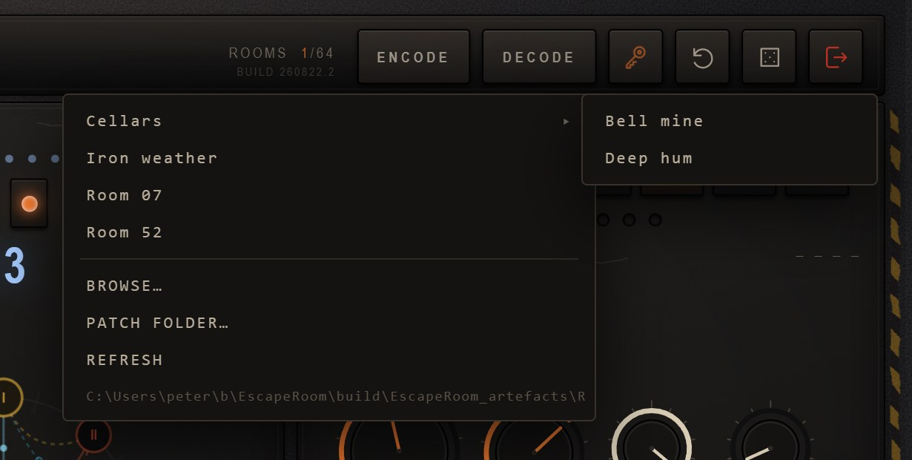
Sub-folders fly out sideways and sit beside the loose patches. BROWSE…
reaches anywhere on disk; PATCH FOLDER… moves the whole library, and the plugin
remembers where it went.
Where they go
Documents\Brokild patches\Escape Room, where every
Brokild plugin keeps a folder of its own. Earlier versions kept rooms beside the installed
.vst3, which an installer can reach and replace; anything saved that way is
copied across the first time this version runs, and the originals are left where they
were. Encoding a patch somewhere else moves the library there from then on — though not
when you simply file one in a sub-folder of the library it already has.
What is in one
Every parameter, sigil included, plus the build that wrote it.
Plain JSON: you can read it, diff it, or mail someone a room.
What is not
The KART's memory of which rooms you have been in, and whether
you have found the legend. Those live on the machine rather than in a patch, because they
are about you rather than about the sound.
Saving in a project
All forty-five parameters are stored in the DAW's session and in the host's own preset
system as well, so reopening a project restores the room without touching the patch folder at
all. The folder is for the rooms you want to reach for again; the project looks after itself.
12
The world rack
Brokild World FX
Every Brokild synth carries the same rack. Not a copy of it and not a
similar one: the identical set of effects and characters, compiled into each
instrument and saved inside each patch. Learn it here and you have learned it
in all of them.
The globe on the panel opens it. What appears is two racks side by side — effects on the left, characters on the right — and they do very different things. An effect processes what the synth has already made. A character reaches back into the instrument and changes how it makes it.
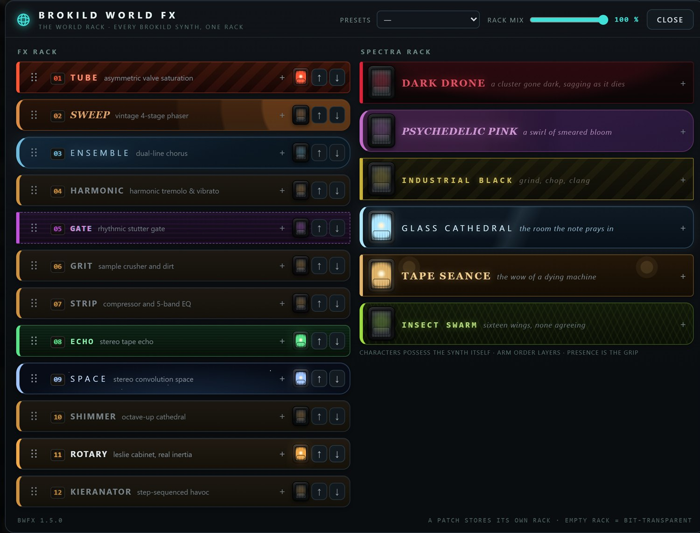
The world rack. Twelve effect pedals on the left, six characters on the right, and one RACK MIX over the lot. Here TUBE, ECHO, SPACE and ROTARY are lit, with GLASS CATHEDRAL and TAPE SEANCE holding the instrument.
Nothing is on when you start, and an empty rack is not a bypass — it is an absence. The audio never enters it. A patch you made before the rack existed sounds exactly as it did, to the sample, and the plugin's own test bench checks that on every build.
The pedals
Twelve, in the order they run: TUBE (asymmetric valve saturation, and its DRIVE holds its level as you turn it up, so the pedal gets dirtier rather than louder), SWEEP (four-stage phaser), ENSEMBLE (dual-line chorus), HARMONIC (the brownface split-band tremolo, plus plain tremolo and true vibrato), GATE (rhythmic stutter), GRIT (crusher and dirt), STRIP (compressor and five-band EQ), ECHO (stereo tape echo up to five seconds), SPACE (true convolution reverb), SHIMMER (a feedback network with the octave folded back into the loop), ROTARY (a Leslie with real inertia — the horn takes about a second to change its mind, the drum about four) and KIERANATOR (the step glitcher). ECHO, GATE and HARMONIC lock to the host clock.
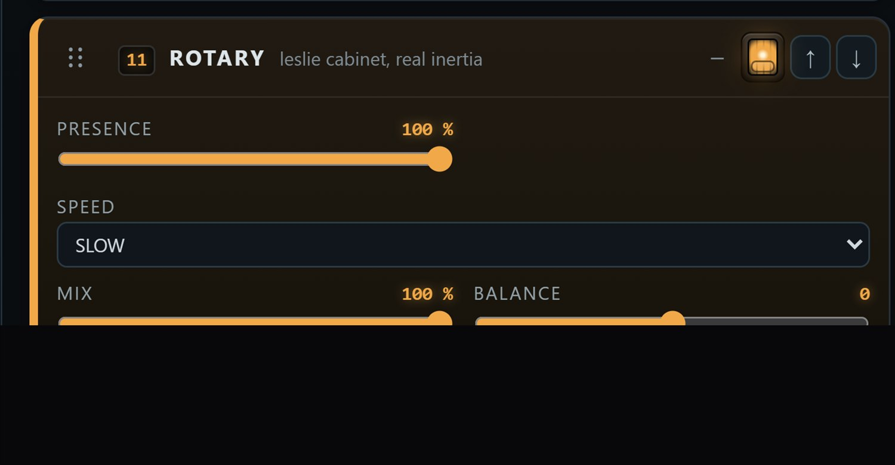
Every pedal carries one control it does not own itself: PRESENCE, in the rack's own colour. It is how much of that pedal is in the signal at all — at zero the pedal is inert and the audio passes it untouched.
Drag a pedal by its grip to reorder the chain, or use the arrows. Reordering while sound is playing is safe: the rack dips through the change and comes back on the other side.
The characters
The right-hand rack is SPECTRA, and it does not process the sound — it possesses the instrument. A character reaches into the voices themselves: how far they drift out of tune with each other, how wide they sit, whether they breathe, whether they sag flat as they die, how dark the filter runs. Two synths under the same character do not sound alike. They sound like themselves, haunted the same way.
DARK DRONE is a cluster gone dark, with a drift that takes minutes to come round. PSYCHEDELIC PINK breathes the width, tuning and filter over a wash of phaser, chorus and reverse reverb it carries itself. INDUSTRIAL BLACK is grind, chop and clang. GLASS CATHEDRAL is a hall of its own and a breath on the tuning. TAPE SEANCE is the wow of a dying machine. INSECT SWARM is sixteen wings, none of them agreeing.
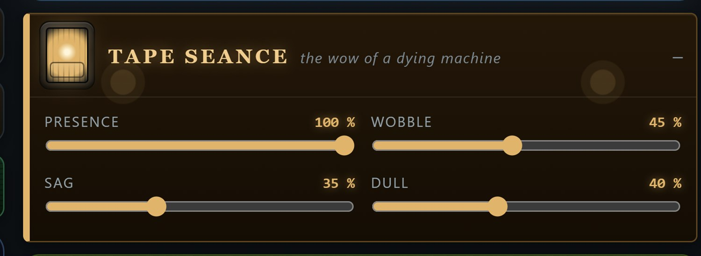
A character opened. PRESENCE here is how hard it grips, so you can have a suggestion of one character and the full weight of another.
Characters stack: arm two and both take hold, in the order you armed them. Their pitch sag is keyed to each note's gate rather than its volume, so a held note stays in tune and only sinks as it dies. In the Escape Room the characters take the door itself. What they detune is the resonance you play, and a released voice sinks away flat — the room letting go of the note.
The step glitcher
KIERANATOR keeps the last ten seconds of everything the synth has played, and every one of its effects is a different way of reading that buffer back. Paint a bar of sixteen steps with the brushes — RETRIG, TAPE STOP, REVERSE, SHUFFLE, PITCH, CRUSH, GATE — and it plays the pattern against the host's bars. The same brush again clears a step. With no host transport it free-runs on its own clock. It is named for the late Kieran Foster, whose Glitch made this kind of thing worth doing.
What the rack remembers
The rack belongs to the patch. Save a patch and its rack goes with it; load one from before the rack existed and it comes back rack-empty, which is exactly the sound it promised. The PRESETS menu in the header holds ten made-up racks to start from. And because the rack is shared code, every Brokild synth gets new modules and fixes on its next build — the effects are the same effects, wherever you opened them.
13
Installing & specifications
Practical
Installing
Unzip. Copy Escape Room.vst3 — the whole folder — into
C:\Program Files\Common Files\VST3\. A sub-folder such as
...\VST3\Brokild\ is fine; hosts look inside.
Rescan. Start your DAW and let it rescan plugins. Escape Room appears as an
instrument, manufacturer Brokild.
Or just run it.Escape Room.exe in the same zip is the standalone
version; it needs no installation and picks its audio device from its own options
menu.
If the panel does not appear — the interface is drawn in a
WebView2 surface, which every up-to-date Windows 10 and 11 already has. If yours does not,
install the free Microsoft Edge WebView2 Runtime and reopen the plugin. The instrument
keeps making sound with the window shut either way.
Specifications
Format
VST3, 64-bit Windows. Standalone included.
Type
Instrument. MIDI in, stereo out, no audio input.
Voices
Four filter voices, last-note priority with oldest-voice
stealing.
Parameters
45, all host-automatable.
Sample rates
Any. Tested 44.1, 48, 88.2 and 96 kHz.
Latency
None reported. Nothing in the signal path looks ahead.
Tail
Declared 8 seconds. MJØL can be considerably longer than that at
full SPACE — leave room at the end of a bounce.
CPU
Modest and roughly constant. The reverb and the shimmer are the only
parts that switch off when unused.
A word about levels
This is a noise machine with three feedback paths, and it is loud. A brick-wall limiter
sits permanently after the output stage, so it cannot exceed full scale, but that is a
safety device and not a mix decision — put it on a track with a fader like anything else,
and watch the CLAMP lamp if you care about how hard it is working.
Escape Room — Brokild Apps. Build 260822.2, August 2026.
Native C++ audio, JUCE 8, interface drawn in the plugin's own window.
Free to use. No installer, no account, no telemetry, nothing phones home.